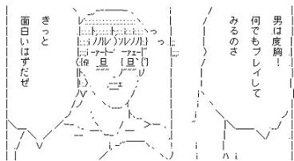

お知らせ -- 2009.6.10 作者様の意向により、No.62「せめて暇とか潰したい」を公開停止しました。 合計96作品のSSを公開中です。 どのゲームからやればいいか分からない人はここをクリック(◆RGSS..WS4M氏作) ※今でも作品受付中です。遅刻組の人はファイトだぜ 実行ファイルは抜いてね※修正パッチは感想掲示板で公開することをお勧めします。 ※一部の作品はディスク容量節約のためwavファイルを圧縮しているが見逃して欲しい ツクスレの名無し氏による2007夏の陣レビュー
